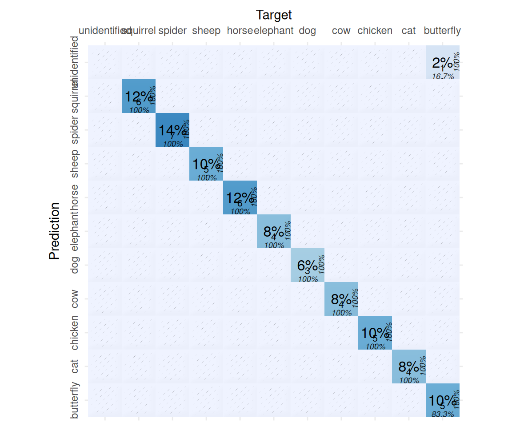
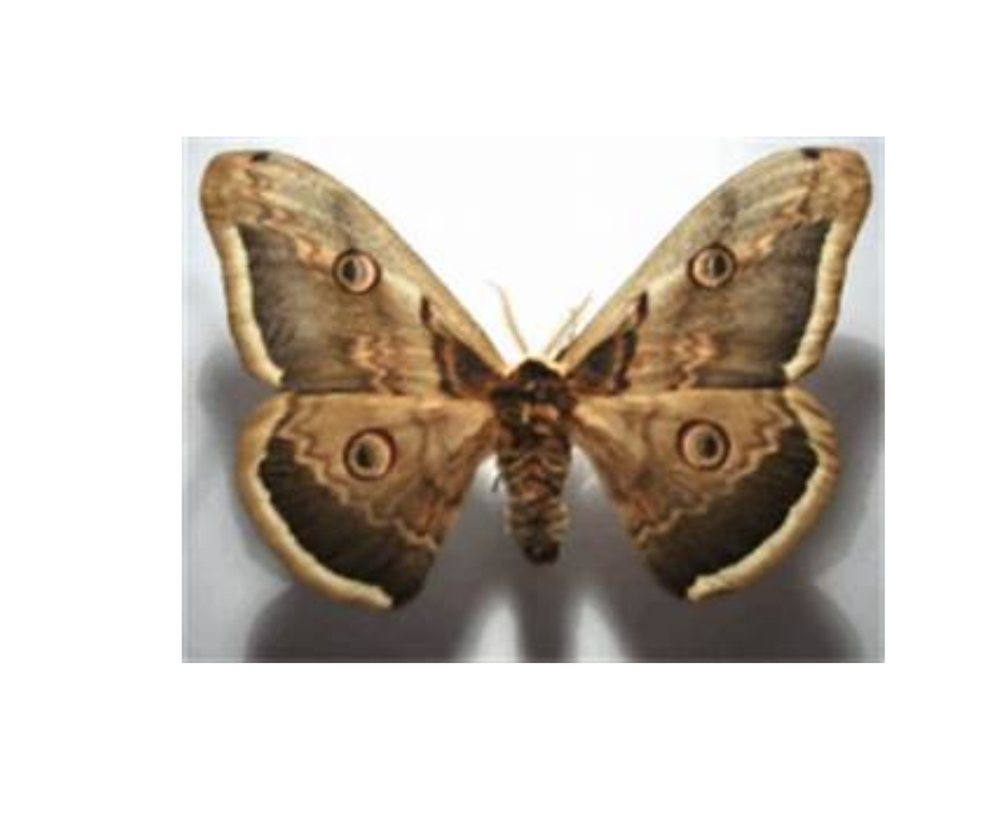

6 Text and Image Classification
6.1 Preliminaries
Load these packages,
Also install and load the following packages for confusion matrix analysis,
Make sure that your Ollama is running,
ping_ollama() # ensure it's running▶ Ollama (v0.15.1) is running at <http://localhost:11434>!# list_models()$name #> run this to view available models in your systemFor consistent responses from LLM, we may set rollama options,
options(rollama_seed = 12345)This is more convenient than using model_params = list(seed = 123) in query() function.
6.2 Text classification
6.2.1 Using LLMs
In progress …
6.2.2 Using embeddings with neural networks
In progress …
6.3 Image classification using LLMs
I relied on animal images and adapted the Python code from this nice Github https://github.com/robert-mcdermott/LLM-Image-Classification to demonstrate image classification using LLMs of our choice. Let’s get started. Don’t forget to refer to previous chapter Chapter 4.
The following are our new friends,
vision_model0 = "gemma3:12b"
vision_model1 = "ministral-3:14b"
vision_model2 = "qwen3-vl:8b"
vision_models = c(vision_model0, vision_model1, vision_model2)Also install and load the following packages form image analysis,
6.3.1 First test: One image for all selected models
Let’s test these models with one image first to know whether out prompt works. Make sure you already downloaded animal images from https://github.com/robert-mcdermott/LLM-Image-Classification/blob/26abb58a576256887b77ff8914457e6f00e2121d/image_data/animals-test.zip. The image name below is one of the 500 images available in the zip file.
dir = "img/animals-test/"
img = "cat_10.jpg"
img_path = paste0(dir,img)
q_text = "Name the animal in image.
ONLY response in singular form and in lowercase.
Do not elaborate, do not comment."
q_response = query(q_text, vision_models, images = img_path,
output = "data.frame", screen = FALSE)
q_response6.3.2 Second test: Five random images for all selected models
Let’s now try these with 5 random images in the directory,
# Names of all images in directory
imgs = list.files(dir)
# sample of n = 5 images
size = 5
set.seed(123)
img_samples = sample(imgs, size = size)
img_sample_paths = paste0(dir, img_samples) # same dir as aboveThen, we run the loop (vectorization in R),
Combine all list objects into one object,
q_response_tbl = do.call(rbind, q_response_list)Add true labels and image file names so you know which row is which,
Looks like a super perfect result for classification.
6.3.3 Third test: Many more images for a selected model
Let’s now try on larger sample for e.g. n = 50 for one model. Sample the images,
For this purpose, we update our prompt a bit to be more specific, where the options must be only among the available labels. We prepare the available labels first,
[1] "butterfly, cat, chicken, cow, dog, elephant, horse, sheep, spider, squirrel"We update the prompt,
q_text = paste0("Name the animal in image, ONLY choose among the following names: ",
available_names, # update to choose only from specific animal names
". If animal name is not included among the listed names, response: unidentified",
". ONLY response in singular form and in lowercase. Do not elaborate, do not comment."
)Then, we run the loop,
using the smallest model of the three, qwen3-vl:8b.
Combine the list,
q_response_tbl = do.call(rbind, q_response_list)Add true labels and image file names,
q_response_tbl$true_label = sub("_.*", "", img_samples)
q_response_tbl$image_name = img_samples
q_response_tblWe check the performance metrics using confusion matrix,
# turn string to factor (for caret)
all_levels = unique(c(q_response_tbl$true_label, q_response_tbl$response))
actual = factor(q_response_tbl$true_label, levels = all_levels)
predicted = factor(q_response_tbl$response, levels = all_levels)
# show the metrics
cm = confusionMatrix(predicted, actual, mode = "everything")
cmConfusion Matrix and Statistics
Reference
Prediction spider squirrel cow butterfly horse chicken elephant dog sheep
spider 7 0 0 0 0 0 0 0 0
squirrel 0 6 0 0 0 0 0 0 0
cow 0 0 4 0 0 0 0 0 0
butterfly 0 0 0 5 0 0 0 0 0
horse 0 0 0 0 6 0 0 0 0
chicken 0 0 0 0 0 5 0 0 0
elephant 0 0 0 0 0 0 4 0 0
dog 0 0 0 0 0 0 0 3 0
sheep 0 0 0 0 0 0 0 0 5
cat 0 0 0 0 0 0 0 0 0
unidentified 0 0 0 1 0 0 0 0 0
Reference
Prediction cat unidentified
spider 0 0
squirrel 0 0
cow 0 0
butterfly 0 0
horse 0 0
chicken 0 0
elephant 0 0
dog 0 0
sheep 0 0
cat 4 0
unidentified 0 0
Overall Statistics
Accuracy : 0.98
95% CI : (0.8935, 0.9995)
No Information Rate : 0.14
P-Value [Acc > NIR] : < 2.2e-16
Kappa : 0.9777
Mcnemar's Test P-Value : NA
Statistics by Class:
Class: spider Class: squirrel Class: cow Class: butterfly
Sensitivity 1.00 1.00 1.00 0.8333
Specificity 1.00 1.00 1.00 1.0000
Pos Pred Value 1.00 1.00 1.00 1.0000
Neg Pred Value 1.00 1.00 1.00 0.9778
Precision 1.00 1.00 1.00 1.0000
Recall 1.00 1.00 1.00 0.8333
F1 1.00 1.00 1.00 0.9091
Prevalence 0.14 0.12 0.08 0.1200
Detection Rate 0.14 0.12 0.08 0.1000
Detection Prevalence 0.14 0.12 0.08 0.1000
Balanced Accuracy 1.00 1.00 1.00 0.9167
Class: horse Class: chicken Class: elephant Class: dog
Sensitivity 1.00 1.0 1.00 1.00
Specificity 1.00 1.0 1.00 1.00
Pos Pred Value 1.00 1.0 1.00 1.00
Neg Pred Value 1.00 1.0 1.00 1.00
Precision 1.00 1.0 1.00 1.00
Recall 1.00 1.0 1.00 1.00
F1 1.00 1.0 1.00 1.00
Prevalence 0.12 0.1 0.08 0.06
Detection Rate 0.12 0.1 0.08 0.06
Detection Prevalence 0.12 0.1 0.08 0.06
Balanced Accuracy 1.00 1.0 1.00 1.00
Class: sheep Class: cat Class: unidentified
Sensitivity 1.0 1.00 NA
Specificity 1.0 1.00 0.98
Pos Pred Value 1.0 1.00 NA
Neg Pred Value 1.0 1.00 NA
Precision 1.0 1.00 0.00
Recall 1.0 1.00 NA
F1 1.0 1.00 NA
Prevalence 0.1 0.08 0.00
Detection Rate 0.1 0.08 0.00
Detection Prevalence 0.1 0.08 0.02
Balanced Accuracy 1.0 1.00 NAcm$byClass[, c("Balanced Accuracy", "Precision", "Recall", "F1")] Balanced Accuracy Precision Recall F1
Class: spider 1.0000000 1 1.0000000 1.0000000
Class: squirrel 1.0000000 1 1.0000000 1.0000000
Class: cow 1.0000000 1 1.0000000 1.0000000
Class: butterfly 0.9166667 1 0.8333333 0.9090909
Class: horse 1.0000000 1 1.0000000 1.0000000
Class: chicken 1.0000000 1 1.0000000 1.0000000
Class: elephant 1.0000000 1 1.0000000 1.0000000
Class: dog 1.0000000 1 1.0000000 1.0000000
Class: sheep 1.0000000 1 1.0000000 1.0000000
Class: cat 1.0000000 1 1.0000000 1.0000000
Class: unidentified NA 0 NA NAand visualize the results,

We have one unidentified animal, let’s check,
idx = which(q_response_tbl$response == "unidentified")
idx[1] 46load.image(paste0(dir, q_response_tbl$image_name[idx])) |> plot(axes = FALSE)
What do you think? Is the label correct, or LLM is correct? It seems our buddy is correct (this is not a butterfly, this is a moth).
You can run the inference on the full n = 500 animal images on your own.
6.4 Deep-dive: How it works
In progress …